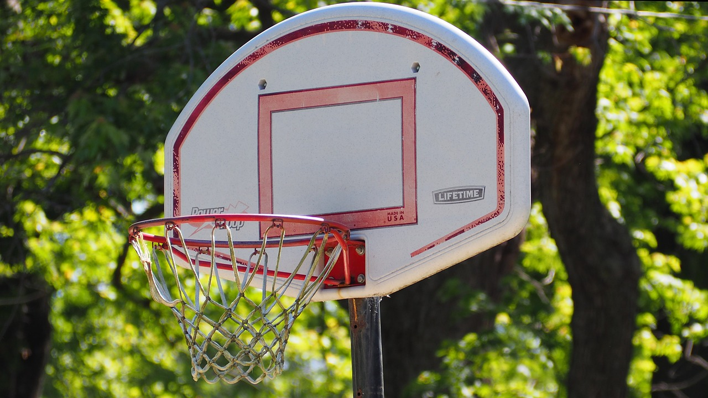

Esporte Total
O seu site de esportes
O seu site de esportes
Os momentos que moldaram a paixão mundial.
As primeiras Olimpíadas remontam a 776 a.C., na antiga cidade de Olímpia, na Grécia. Esses jogos eram inicialmente parte de um festival religioso em honra a Zeus, o rei dos deuses no panteão grego. Olímpia, um santuário religioso localizado na região ocidental do Peloponeso, tornava-se o centro de um evento que reunia não apenas atletas, mas também espectadores e comerciantes de todas as partes da Grécia.
Os Jogos Olímpicos tinham um profundo significado religioso. A cerimônia de abertura incluía sacrifícios e oferendas a Zeus e, durante o evento, eram realizadas competições em honra aos deuses. Esse caráter sagrado impunha uma trégua nas guerras, conhecida como "trégua olímpica".
Há exatos 125 anos, no dia 6 de abril de 1896, começava em Atenas a disputa da primeira Olimpíada da Era Moderna, dois anos após a fundação do Comitê Olímpico Internacional por Pierre de Coubertin. A intenção do criador dos Jogos era que a competição inaugural acontecesse em Paris, mas em homenagem aos Jogos Olímpicos da Antiguidade, a Grécia foi escolhida como sede.
Ficou acertado, então, que a capital francesa receberia a edição seguinte do evento, em 1900, junto com a histórica Exposição Universal que apresentaria ao mundo o movimento Art Nouveau.
A primeira Copa do Mundo aconteceu em 1930, após muitos anos de tentativas de se organizar uma competição mundial de futebol. O início do evento está diretamente ligado ao surgimento da Fifa e sua atuação na popularização e profissionalização do futebol.
A Federação foi fundada em 1904 e contou com a adesão inicial das seguintes nações: Bélgica, Dinamarca, França, Holanda, Espanha, Suécia e Suíça. O evento inaugural foi sediado no Uruguai, que se sagrou o primeiro campeão do mundo.

A NBA foi fundada em 1946, ainda sob o nome de Basketball Association of America (BAA). Em 1949 ela se fundiu com a rival National Basketball League (NBL), campeonato que estava em atividade desde 1937.
A partir desta fusão, a liga passou a ser conhecida como National Basketball Association. Apesar da data de criação da NBL ser anterior ao da BAA, os campeões da NBA são contabilizados apenas de 1946 até os dias atuais, marcando o início da maior liga de basquete do planeta.